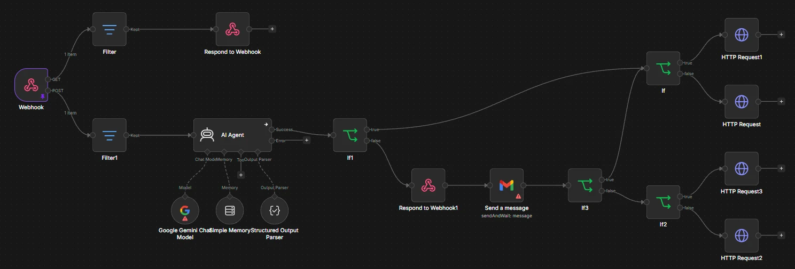
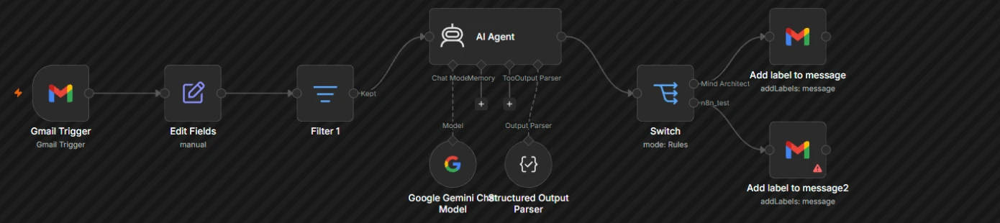
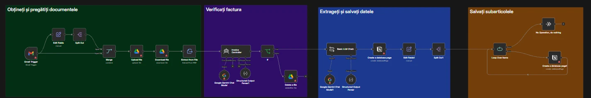
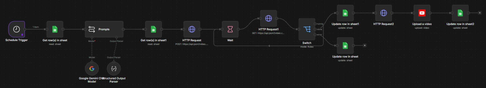

Șapte fluxuri din cursul de n8n, fiecare pentru o problemă concretă: social media, relația cu clienții, e-mailuri, documente, video și recrutare. Toate capturile sunt făcute direct din editorul n8n.
Social media · AI · 16 noduri
Generator de postări pentru Facebook
La ora programată, un agent AI caută pe web idei de actualitate și scrie postarea. Un model generează imaginea, postarea se publică pe pagina de Facebook, se trimite o confirmare pe Telegram și se notează într-un tabel.
Pornește dintr-un formular. Trei agenți AI scriu textul postării (cu căutare pe web), descrierea imaginii și titlul. Imaginea se generează automat, postarea se publică pe LinkedIn, iar autorul primește o confirmare pe e-mail.
Primește mesajele clienților printr-un webhook, iar un agent AI cu memorie pregătește răspunsul. Înainte de trimitere, un om aprobă răspunsul pe e-mail; apoi botul răspunde prin API-ul Meta.
WebhookAgent AIMemorieAprobare umanăGraph API

Productivitate · AI · 19 noduri
Sortarea automată a e-mailurilor
Fiecare e-mail nou este citit de un agent AI, care îl încadrează într-o categorie. Un nod Switch aplică eticheta potrivită în Gmail, astfel încât căsuța rămâne ordonată fără intervenție manuală.
GmailAgent AIRăspuns structuratSwitchEtichete

Documente · AI · 21 noduri
Procesarea automată a facturilor
Ia atașamentele din Gmail și le salvează în Google Drive. Un agent AI verifică dacă documentul este o factură, apoi datele și fiecare rând de produse sunt extrase și salvate în Notion. Fluxul este organizat pe patru etape.
GmailGoogle DriveAgent AIExtragere dateNotion

Conținut video · AI · 16 noduri
Creator de videoclipuri pentru YouTube
Ia ideile dintr-un tabel, scrie scenariul și indicațiile pentru video, generează videoclipul printr-un API și verifică periodic dacă e gata. Videoclipul se publică pe YouTube, iar erorile se notează separat.
ProgramareLLMjson2videoWait și SwitchYouTubeGoogle Sheets

Resurse umane · AI · 7 noduri
Analiza CV-urilor
CV-urile primite pe e-mail sunt salvate în Google Drive, iar textul lor este extras din PDF. Un agent AI evaluează candidatul după criterii clare și adaugă rezultatul într-un tabel.